Il Tappeto Volante
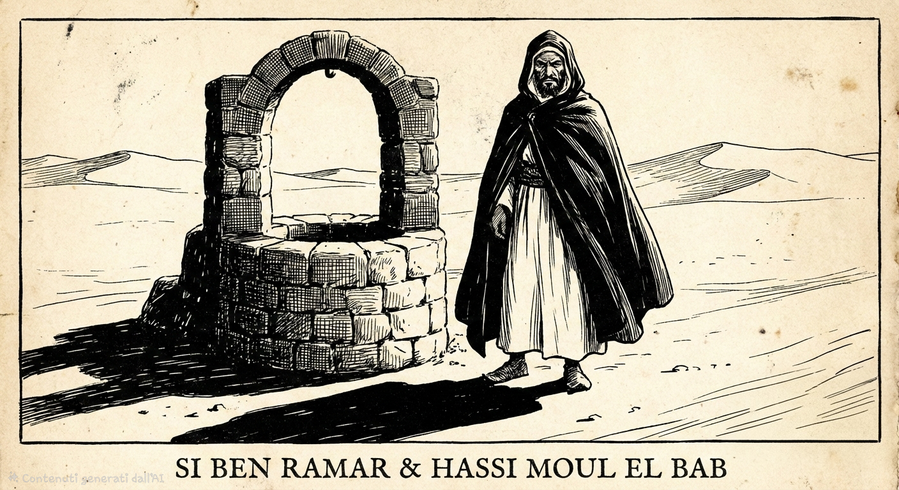

Prologo
Questo racconto nasce all’interno della letteratura di viaggio anglosassone di fine Ottocento, quando il Mediterraneo e il Nord Africa erano osservati attraverso uno sguardo europeo insieme curioso, affascinato e profondamente segnato dalla mentalità coloniale.
Le figure che incontriamo — ufficiali, commercianti, interpreti, mediatori — appartengono a un mondo di frontiera, dove l’incontro tra culture non è mai neutrale: è sempre attraversato da rapporti di potere, interessi economici e gerarchie implicite.
“Ben Ramar e i cristiani” si colloca esattamente in questo spazio.
Non è soltanto un racconto d’avventura: è una testimonianza di come l’Occidente osservava, descriveva e spesso semplificava il Marocco e il mondo ottomano all’inizio del Novecento.
I – LO YACHT LORELEI
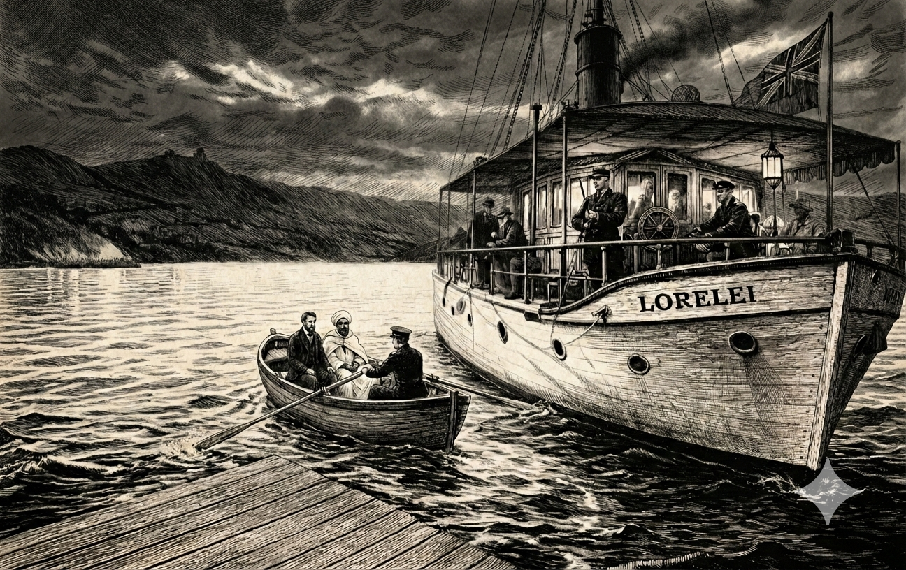
Il Lorelei era uno yacht costruito per il piacere e per la fuga. Non per il commercio, non per la guerra, ma per chi poteva permettersi di muoversi lungo le coste del Mediterraneo senza rendere conto a nessuno.
Il narratore vi si trovava quasi per caso, in convalescenza dopo una febbre presa a Napoli. La navigazione procedeva lenta, con soste impreviste e giornate vuote, interrotte solo dal rumore dell’acqua contro lo scafo.
Fu durante una di queste soste, su un tratto isolato della costa settentrionale del Marocco, che la routine cambiò. Dalla riva si avvicinò una piccola imbarcazione. A bordo c’erano due uomini.
Uno appariva provato, elegante nonostante la stanchezza. L’altro, più imponente, aveva la presenza di chi è abituato a farsi largo senza chiedere permesso. Salirono a bordo con poche parole.
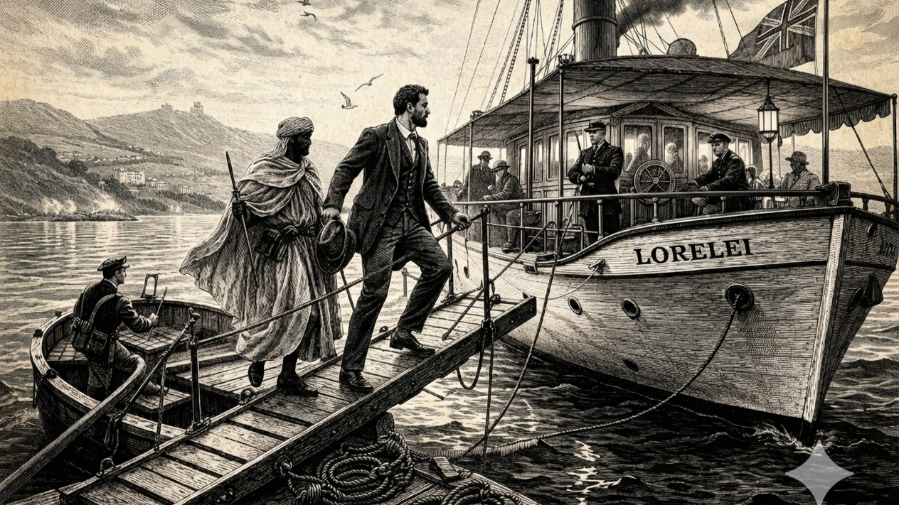
Il primo si presentò come Howard Kerr. Non spiegò da dove venisse né dove fosse diretto. Non sembrava un viaggiatore, né un uomo d’affari, né un funzionario. Aveva piuttosto l’aria di qualcuno che conosceva quei luoghi abbastanza da non doverli descrivere.
Con lui c’era Haj Absalaam, una guida locale dal portamento severo, rispettata anche dall’equipaggio. Un breve alterco con il primo ufficiale bastò a chiarire i rapporti di forza: non c’era arroganza, ma una calma che non ammetteva repliche. Io ero ancora debole. La febbre presa a Napoli mi aveva lasciato addosso una stanchezza persistente, e il viaggio sul Lorelei era stato scelto più per allontanarmi dall’Europa che per curiosità.
Kerr lo capì subito. Non fece domande, non mostrò premura. Si limitò a dire che proseguiva verso Larache, via terra, e che la strada sarebbe stata lenta, senza fretta. Kerr e il suo compagno non restarono a lungo sullo yacht, il loro viaggio proseguiva.
Ed è lì, lontano dal mare e dalle rotte europee, che la storia comincia davvero.
II – IL VIAGGIO NELL’INTERNO
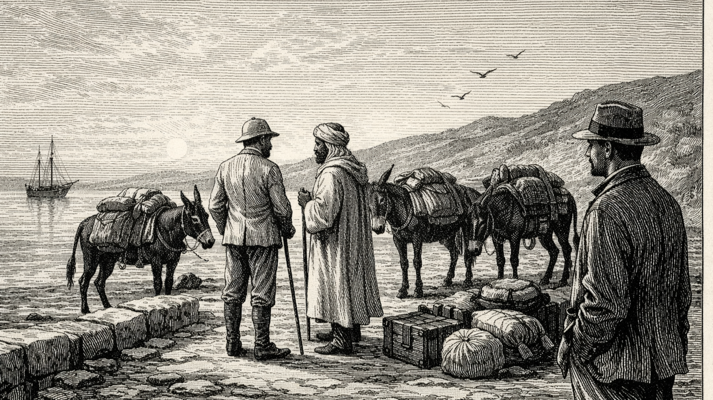
Lasciato lo yacht, il mare scomparve in poche ore. La costa rimase alle spalle come una linea indistinta, mentre la strada si restringeva tra colline aride e villaggi di terra cruda.
Kerr non parlava molto. Procedeva con passo regolare, come chi ha già percorso quei sentieri e non sente il bisogno di commentarli. Il narratore lo seguiva, ancora indebolito ma sorprendentemente lucido. C’era qualcosa in quel viaggio che lo teneva desto: l’assenza di rumore, il ritmo degli animali, la sensazione di trovarsi fuori dal tempo.
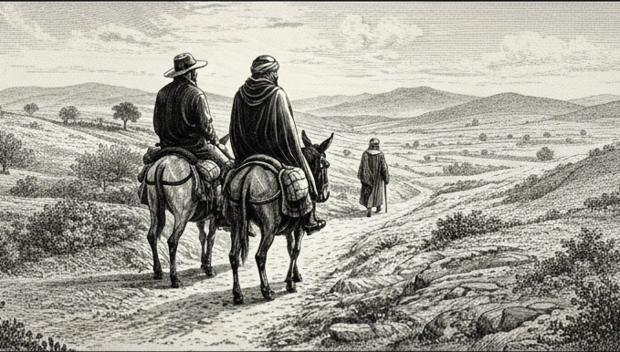
A guidarli era Haj Absalaam. Non chiedeva indicazioni, non esitava. Conosceva piste e deviazioni come se fossero parte del suo stesso corpo. La sua presenza imponeva rispetto nei villaggi in cui si fermavano per la notte: tettoie di fango, bracieri accesi, pane caldo e poche parole.
Le giornate scorrevano tutte uguali e tutte diverse. Albe fredde. Strade polverose. Soste improvvise sotto alberi isolati. La luce che cambiava lentamente colore sulle colline. Il viaggio durò diversi giorni. Non accadde nulla di straordinario, eppure tutto sembrava carico di un’attesa difficile da nominare. Come se la destinazione non fosse una città, ma un incontro.
Fu così che arrivarono a Larache.
III – Larache
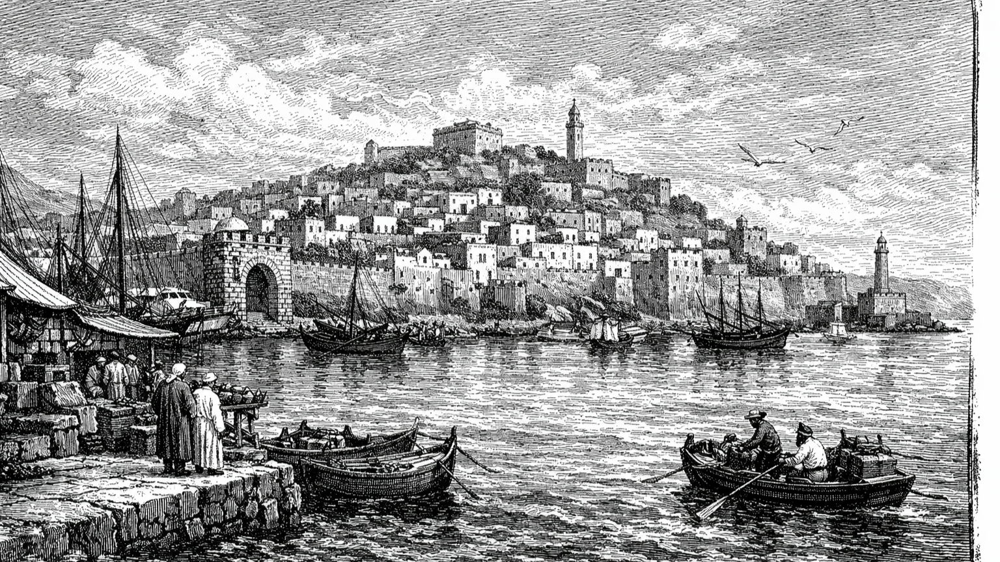
Larache non apparve come una rivelazione, ma come una presenza. Bianca, compatta, adagiata sul mare con la naturalezza di chi non deve dimostrare nulla. Dal promontorio si vedevano le mura, la porta, la linea irregolare delle case che scendevano verso l’acqua. Il porto non era grande, ma vivo. Scialuppe, voci, casse, uomini che trattavano come se nulla al mondo potesse essere urgente più del prezzo di una partita di merce.
Fu lì che Kerr rallentò. Non guardava il porto: osservava due uomini fermi poco più avanti, sotto l’ombra di un edificio che mostrava, senza discrezione, l’architettura europea.
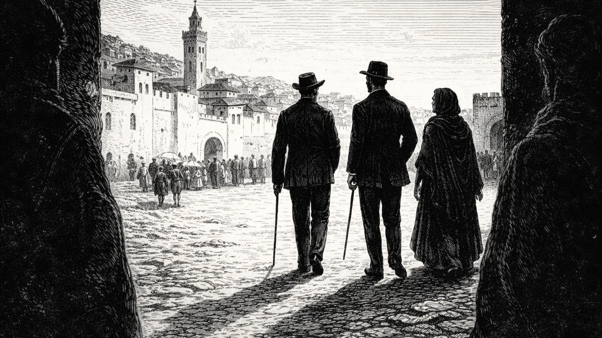
Li fissò per un tempo appena percettibile.
— «Li vede?» mi disse piano.
Erano vestiti all’inglese. Completi chiari, cappelli di paglia, l’aria di chi non teme il sole perché non lo considera una minaccia.
— «Lumley. E l’altro è Farren.»
Pronunciò i nomi come si pronuncia qualcosa che appartiene al passato ma non è stato dimenticato.
IV – La casa oltre la collina
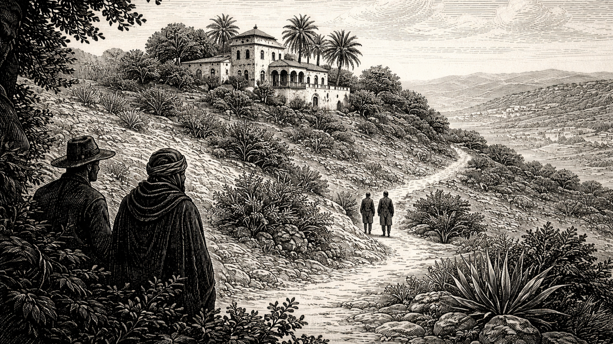
La loro casa non era nella medina. Sorgeva appena fuori, oltre una lieve altura, con un giardino che ostentava ordine europeo in un paesaggio che europeo non era. Vi abitavano con le mogli. Donne inglesi. Silenziose. Composte.
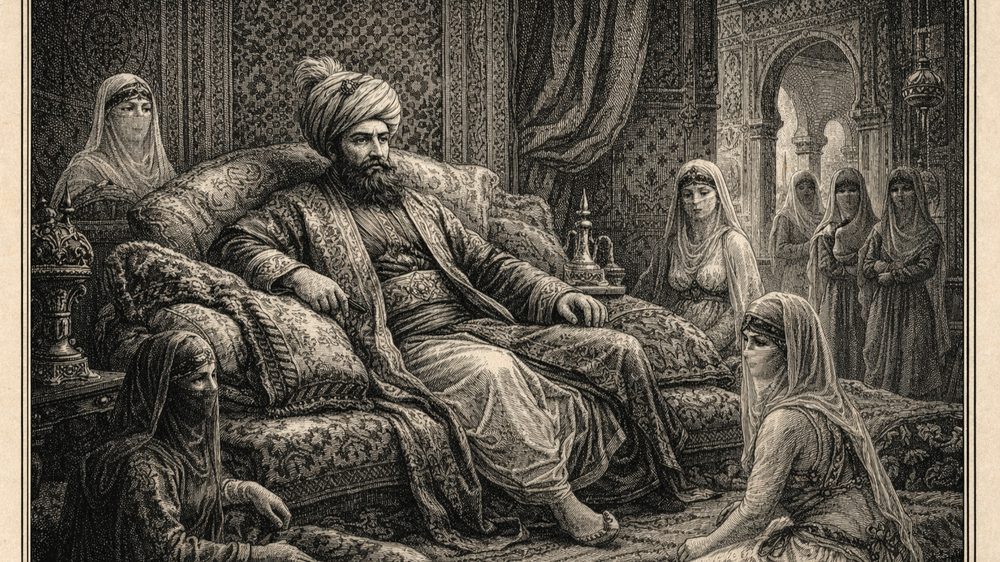
Kerr non mostrò stupore né rancore. Mi raccontò allora, con quella sua voce sempre controllata, la storia che li legava. Anni prima, una giovane donna era stata sottratta alla sua famiglia e venduta. Non in un mercato visibile, ma in quel circuito invisibile che attraversava il Mediterraneo come una corrente sommersa. Era destinata a Costantinopoli, ad un harem. Il nome del Pascià non venne pronunciato non era necessario.
La ragazza non vi arrivò mai, Kerr intercettò la rotta. Comprò informazioni, pagò uomini, navigò di notte e la riportò indietro. Lumley e Farren erano coinvolti, non come carnefici diretti ma come ingranaggi. Facilitatori, uomini d’affari. La faccenda venne insabbiata, nessuno fu processato, nessuno fu esposto. E ora vivevano lì, tranquilli e rispettabili.
V – Ben Ramar
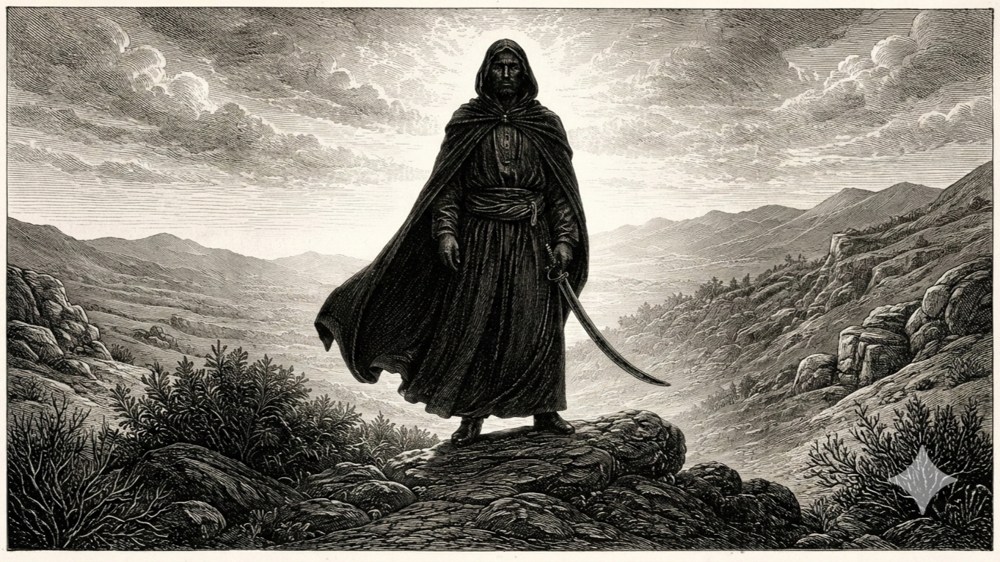
Kerr non parlò subito. Quando lo fece, non fu per difendersi, ma per chiarire. La ragazza non era soltanto una vittima di traffico. Era figlia di Ben Ramar, uomo influente tra le rotte del Levante e legato agli ambienti del Pascià di Costantinopoli. Il suo nome non circola nei porti per caso.
Il salvataggio non generò una caccia a Kerr, Ben Ramar non aveva interesse per lui. Il suo sguardo era rivolto altrove. Lumley e Farren pur non essendo i carnefici erano gli ingranaggi visibili del meccanismo: intermediari, uomini d’affari, presenze riconoscibili. Erano loro ad aver reso possibile la vendita, loro ad aver aperto la strada. Per un uomo come Ben Ramar, l’affronto non si dimenticava. Si annotava, non per essere vendicato subito ma al momento opportuno.
VI – Il tranello
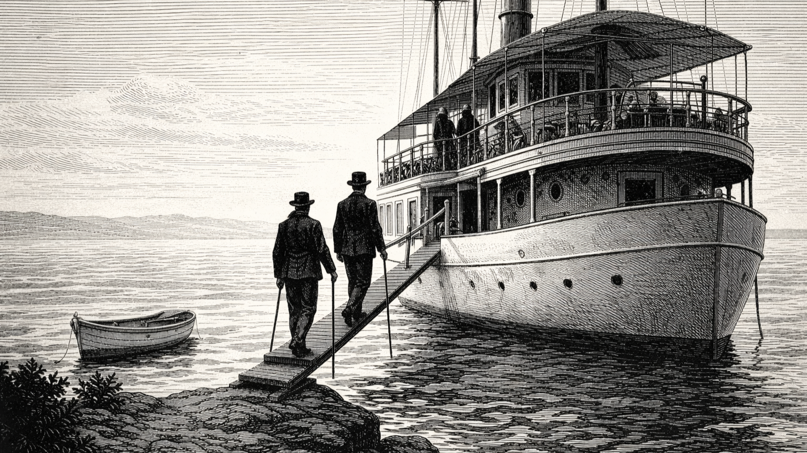
L’invito a bordo del Lorelei fu cordiale. Il mare era immobile. Le formalità impeccabili. Kerr accettò. Non era un uomo che evitava il confronto. Il capitano offrì whisky. Lumley sorrise, Farren parlò di commerci, di nuove opportunità.
Poi qualcosa cambiò. Un ordine sussurrato. Uno scatto troppo rapido. Una porta che si chiude. Il tranello era semplice. Scomparsa in mare aperto, una disgrazia, un incidente, ma non riuscì.
VII – Ciò che resta
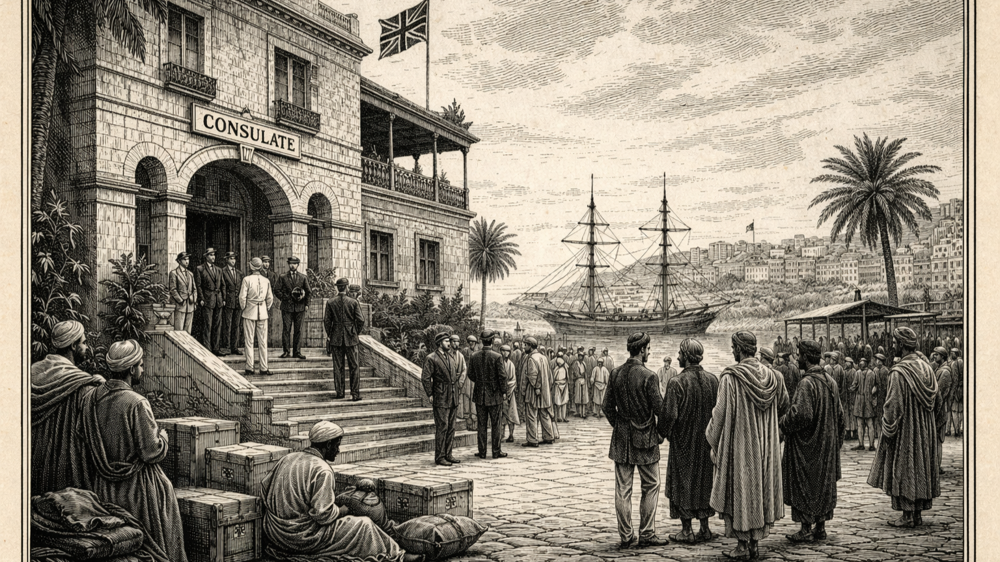
Lumley e Farren continuarono a vivere a Larache. Continuarono a ricevere ospiti. Continuarono a commerciare. Le loro mogli passeggiavano nel tardo pomeriggio lungo la collina.
L’Impero non aveva bisogno di eroi. Aveva bisogno di continuità. Kerr partì, non vinse, non perse. Aveva interrotto una rotta, ma non il sistema. Il Mediterraneo continuò a respirare come aveva sempre fatto: porti, consoli, scialuppe, case oltre la collina.
E sotto la superficie, le stesse correnti.
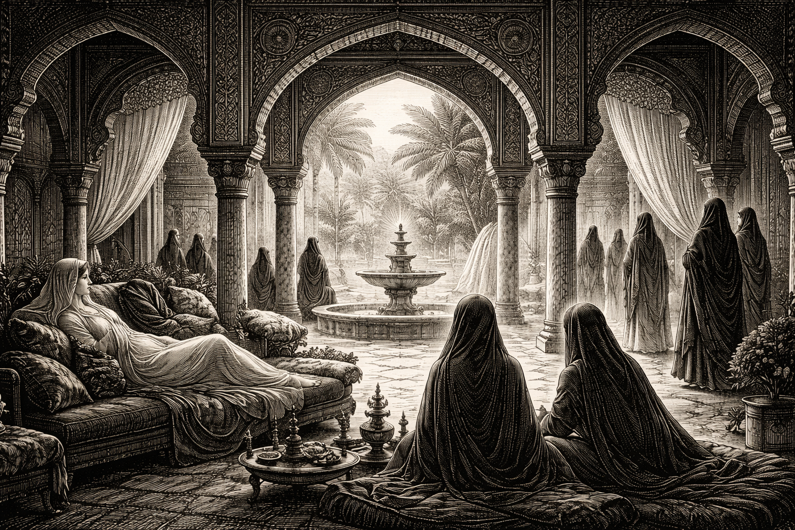
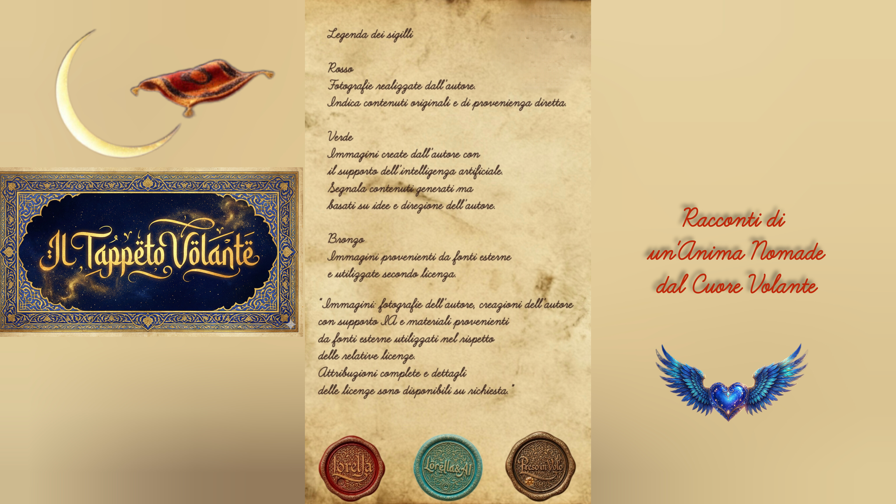